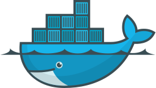
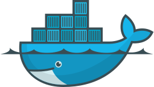

Kevin M Friedl
Kevin Friedl is the author and creator of Cout(pronounced C-Out). A self taught software engineer, mathematics enthusiast and generally a big nerd, Kevin created the Cout blog to share his passions with a more global network of like-minded and interested readers. Kevin has a small obsession with the informational sciences of cryptography and the mathematics of primality. He is currently studying linear algebra to extend his capabilities as a programmer. He once also made it to level 11 as a wizard in Dungeons&Dragons 3.5 before teleporting himself and his party members into a wall. Originally from New York, Kevin is currently operating out of Memphis, Tennessee.
Cout is a blog which aims to deliver articles which provide context and clarity to it's readers on the topics of software engineering, web development, computer science, embedded programming, higher mathematics, and the tools to do it all from the command line.
The title of the blog, and it's logo, comes from "std::cout <<" which will be intimately familiar to anyone who's tried their hands at the c++ programming language. To keep it's definition in layman's terms, std::cout << tells the program to output the string of text which follows. For instance:
std::cout << "Hello, World"; The content of this blog is the author's output, which he submits to cout to be output to the world.
Proficiencies


 



 GitHub
GitHub

Current Project
Stump is a cross platform bug tracker application. The server is written in c++ and uses the Boost Asio library for asynchronious network communication over TCP/IP. The server handles and parses client input to commit and retrieve data from a PostgreSQL relational database using the libpq++ library. The database's tables are structured robustly to allow:
- user authentication
- user grouping
- project manager/user/group permissions
- time stamp retrieval and sorting
- user and group issue assignments
- issue action deadlines
- status modifiers
- user and project manager comments
- behavioral and issue replication reporting
- bug codenames for human memorability and ease of use.
The server is accessed by either the Java GUI client, Python GUI client, in browser javascript web-client or the c++ client-cli.
Bugs encountered durring the development of stump, are logged and tracked using Stump
Stump is open-source free software released under the MIT License